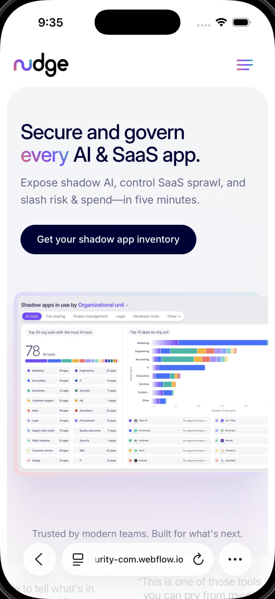

Context
Joined in 2022 with a brief to build a brand from the ground up, separate from the fear-based visuals saturating cybersecurity. The team was four people with a working prototype. We built the rest of the product around it.
The discovery surface
Security teams aren't under-informed. They're drowning in disconnected signals. The discovery surface had to hold thousands of applications and identities without becoming another wall of charts. Type carries the data. Color carries the verdict.



The system
One shared design system across product, brand, and marketing. Forty-eight components on the rule that type does the work, and decoration earns its place or leaves.
How it was made
Listen first
Hours with security leaders. The pattern was consistent. They aren't under-informed. They're drowning in disconnected signals.
Find the through-line
One spine for the product. Discover, act, govern. Three verbs, repeated everywhere, so every screen tells you which third you're in.
Write the system
Tokens, type, motion, voice. Forty-eight components. The rule: type does the work, decoration earns its place or leaves.
Ship, then sharpen
Released to early customers in the first six months. Tightened from feedback every other week, no preciousness.
Outcome
412× growth in customer base since 2022.
The brand reads recognizable now in a way it didn't. The design system is the shared vocabulary engineering ships against.
From signup to discovering an organization's first unsanctioned application.
Average week-one action rate across employees receiving in-product nudges.
Of production screens use tokenized components from the shared system.
Across the trade and analyst press, often citing the product's clarity.